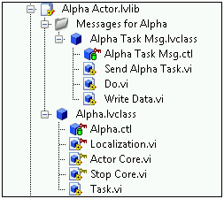

LabVIEW 2012
The Actor Framework is a template for creating LabVIEW applications that consist of multiple, independent tasks that need to communicate with each other. This framework was designed to address common development scenarios that can lead to significant duplication of code when extending functionality or adding additional processes.
Each actor is defined by a LabVIEW class that is instantiated by launching an instance of the actor, which is represented by a LabVIEW object. All descendants of the base actor class (Actor) contain the Actor Core method, which serves as a queued message handler. This VI receives and responds to messages and data sent to it by other actors in the system. However, because actors are LabVIEW classes, actors are far more reusable and scalable than traditional queued message handlers.
This template includes three actors (Application, Alpha, and Beta) and shows how they communicate with each other.
| Note This template makes extensive use of LabVIEW classes. Designing an application with the Actor Framework requires familiarity with principles of object-oriented programming in LabVIEW. This document provides the information necessary to understand and modify the Actor Framework template. For more information about designing applications with the Actor Framework, refer to the Actor Framework Whitepaper in the Project Documentation folder of the Project Explorer window. |
Refer to the Feedback Evaporative Cooler sample project, available from the Create Project dialog box, for an example of adapting this template to an application.
Refer to ni.com for a developer walkthrough of this template.
LabVIEW Base, Full, or Professional Development System
The Actor Framework is suitable for applications where you find yourself duplicating large amounts of code but making small, specific tweaks to each copy. Developing medium-to-large applications in this way is difficult, especially if you intend to maintain and extend the application.
For example, consider an measurement application that needs to continuously take both strain and resistance measurements. A traditional approach would be to create a queued message handler that takes a strain measurement, copy this queued message handler, modify the copy to take a resistance measurement, and then combine both queued message handlers into a single application. This approach results in two queued message handlers that share a large amount of code but each have some specific differences. If you change one part of the program, you must track and duplicate these changes in the other one.
In using the Actor Framework approach, you would start by identifying functionality that both types of measurements share, such as the following steps:
Each of these steps is similar to a state, or message diagram, in a queued message handler. Although these steps are the same for both kinds of measurements, the specific commands involved are different for each type of measurement. The hardware device that is used is different, the VI that acquires the data is different, the processing applied to the measurement is different, and so on.
The object-oriented approach of the Actor Framework addresses the scalability and reuse issues while providing additional functionality. Using the Actor Framework, you can encapsulate the generic functionality described above in a Measurement actor. The Measurement actor, which is a LabVIEW class, would not be able to take a measurement itself; instead, its member VIs would define, in general terms, what kinds of steps are necessary. Each step would correlate to a member VI in the class.
Because the Measurement actor is a LabVIEW class, you would then create two child actors that inherit from Measurement for specific functionality: a Strain actor and a Resistance actor. These children would inherit the functionality of their parent but would add specific strain- or resistance-related operations, thus enabling these actors to actually take, process, and display continuous measurements. This approach maximizes code reuse by encapsulating generic functionality into a single point—the Measurement actor, leaving its children to define specific commands.
Additionally, because each actor is a separate entity, applications can load actors into memory dynamically. For example, you could have one application that, at the click of a button, is able to take a strain or resistance measurement. Implementing this kind of functionality without using the Actor Framework is difficult, time-consuming, and error-prone, especially if you plan to modify or extend the application in the future. The Actor Framework, meanwhile, is designed for these kinds of applications.
Complete the following steps to run this template:
The Actor Framework consists of actors and messages. Messages are delivered in message queues. To minimize errors and maximize application reliability, the Actor Framework restricts which actors can send messages to one another.
An actor is a LabVIEW class that represents the state of some task. All actor classes descend from the Actor class, which is included with LabVIEW. This class has three main components:
For example, the following screenshot shows a project library that contains one actor (Alpha, represented by the Alpha class) and one message (the Alpha Task Msg class).
The screenshots above shows the following files that are related to this actor:
| Note
|
By default, a given actor X can send messages to only the following actors:
This restricted order of communication is called a task tree. It means there is only one communication path to manage, making it easy to write code that ensures that other actors have a chance to hear and respond messages before shutting down.
For example, this template defines the following task tree:
where Project_Name is the name you give the project.
This diagram indicates that the Application actor launches both the Alpha and Beta actors. Therefore, the Application actor is referred to as the top-level actor. The top-level actor is the single actor from which all other actors are launched. The top-level actor itself is launched from a regular VI.
| Note The task tree hierarchy is different from the LabVIEW class inheritance hierarchy. Although Alpha and Beta are launched from Application, the Alpha and Beta classes do not inherit from the Project_Name class. |
Given this task tree, the following communication rules are in effect:
The implication is that neither Alpha nor Beta can send messages to each other. Alpha must send a message to Application, which decides whether Beta needs to hear the message and takes the appropriate action. Again, restricting the communication path helps you write more manageable and error-free code.
The following block diagram shows the code, located in the Actor Core method of the Project_Name class, that defines the task tree by launching Alpha and Beta:
Messages are sent by using queues. To enforce the task tree, each actor initially has access to only the following two message queues:
Access to a queue is different from the queue itself. To prevent other actors from releasing its message queue, an actor does not share the queue itself. Instead, the Actor Framework introduces the concept of an enqueuer. An enqueuer is a reference that enables an actor to send messages to a queue but not to do anything else with it.
For example, consider an actor X that already is running. When it launched, X obtained a queue that it uses to send messages to itself. From X's point of view, this is the to-self queue. If X launches Y, the following steps occur:
Y now has access to two queues:
The following diagram shows how these two actors can communicate with each other:
X now can send messages to itself (1) and Y (2). Y can send messages to X (3) and to itself (4). Although there are four directions a message can go in, only two queues are involved. Additionally, neither actor can release the queue of the other. Instead, each actor releases its own queue as part of its shutdown procedure.
After you create a project based on this template, LabVIEW displays the following hierarchy:
An actor is a LabVIEW class. Like any LabVIEW class, before you create it, you must understand what the actor is and what the actor does.
To determine what actors you need to create and what each one does, think about the independently-running tasks in your application and what actions each task can perform. For example, consider a task that acquires a continuous measurement from an analog device. This task needs to know how to connect to the hardware, acquire a measurement continuously, write safe values to the hardware, and disconnect from the hardware. An actor for this task might have one method for each of these actions. Create one actor for each task you identify.
After you determine what an actor needs to do, determine which actions happen continuously while the actor is running and which actions happen only after receiving a message from another actor. Actions that happen continuously should be added to the Actor Core method of the actor. Actions that happen in response to a message should be represented as a method of the actor's class. Use this information to define the behavior of each actor. Then, create the messages that will instruct the actor to invoke each of its methods.
The Actor Framework provides two ways of defining the behavior of an actor. You must decide which of the following ways is appropriate:
The Actor Core method of the Actor class contains the code that processes and reacts to messages sent to the actor. Each actor inherits this behavior. Actors can do other things continuously while processing messages. To define an actor's continuous behavior, override the Actor Core method in a descendant class.
The following screenshot shows that all three actors in this template override the Actor Core method:
To stop an actor, send the actor a Stop message by using one of the following VIs:
These methods are available on the Functions palette. Refer to the Stop Core method of the Project_Name class for an example of stopping an actor.
Launch an actor by using the Launch Actor method, which is available on the Functions palette. Refer to the following code in the Load App VI for an example of launching a top-level actor:
Refer to the following code in the Actor Core method of the Project_Name class for an example of launching a nested actor:
A message is a LabVIEW class that instructs an actor to invoke one of its methods. Complete the following steps to create a message for an actor:
To send a message, use method Msg.lvclass:Send method.vi, where method is the method you want the receiving actor to execute. You created Send method.vi when you created the message.
| Note Refer to Stopping an Actor for information about sending a Stop or Emergency Stop message. |
In this template, refer to the following VIs for examples of sending messages:
The Message to Alpha event case of the Event structure in the Actor Core method of the Project_Name class defines what happens when the application actor sends a message to the Alpha actor. Modify this event case according to the needs of your application.
The Message to Beta event case of the Event structure in the Actor Core method of the Project_Name class defines what happens when the Application actor sends a message to the Beta actor. Modify this event case according to the needs of your application.
The stop behavior for the Application actor is defined in the following places:
The stop behaviors for these actors are defined in the Stop Core methods of the class. By default, these methods shut down parallel tasks that were started in the actor's Actor Core method. Modify the code in these methods according to the needs of your application.
If you modify this template such that Alpha or Beta launches any nested actors, ensure the actor's Stop Core method sends a Stop or Emergency Stop message, as appropriate, to these nested actors.
You generally define the user interface of an actor in its Actor Core method. In this template, only the Application actor defines a user interface in its Actor Core method. The front panel of this VI is the user interface of the application. Change this user interface according to the needs of your application.
| Name Used in this Document | Qualified Filename |
|---|---|
| Application Launcher library | Application Launcher.lvlib |
| Localization VI | Application Launcher.lvlib:Localization.vi |
| Splash Screen VI | Application Launcher.lvlib:Splash Screen.vi |
| Project_Name Actor library | Project_Name Actor.lvlib |
| Log Event Msg | Project_Name Actor.lvlib:Log Event Msg.lvclass |
| Log Event Msg:Do VI | Project_Name Actor.lvlib:Log Event Msg.lvclass:Do.vi |
| Log Event Msg:Send Log Event VI | Project_Name Actor.lvlib:Log Event Msg.lvclass:Send Log Event.vi |
| Project_Name | Project_Name Actor.lvlib:Project_Name.lvclass |
| Project_Name:Actor Core VI | Project_Name Actor.lvlib:Project_Name.lvclass:Actor Core.vi |
| Project_Name:Load App VI | Project_Name Actor.lvlib:Project_Name.lvclass:Load App.vi |
| Project_Name:Localization VI | Project_Name Actor.lvlib:Project_Name.lvclass:Localization.vi |
| Project_Name:Log Event VI | Project_Name Actor.lvlib:Project_Name.lvclass:Log Event.vi |
| Project_Name:Read Config File VI | Project_Name Actor.lvlib:Project_Name.lvclass:Read Config File.vi |
| Project_Name:Stop Core VI | Project_Name Actor.lvlib:Project_Name.lvclass:Stop Core.vi |
| Alpha Actor library | Alpha Actor.lvlib |
| Alpha Task Msg | Alpha Actor.lvlib:Alpha Task Msg.lvclass |
| Alpha Task Msg:Do VI | Alpha Actor.lvlib:Alpha Task Msg.lvclass:Do.vi |
| Alpha Task Msg:Send Alpha Task VI | Alpha Actor.lvlib:Alpha Task Msg.lvclass:Send Alpha Task.vi |
| Alpha Task Msg:Write Data VI | Alpha Actor.lvlib:Alpha Task Msg.lvclass:Write Data.vi |
| Alpha | Alpha Actor.lvlib:Alpha.lvclass |
| Alpha:Actor Core VI | Alpha Actor.lvlib:Alpha.lvclass:Actor Core.vi |
| Alpha:Localization VI | Alpha Actor.lvlib:Alpha.lvclass:Localization.vi |
| Alpha:Stop Core VI | Alpha Actor.lvlib:Alpha.lvclass:Stop Core.vi |
| Alpha:Task VI | Alpha Actor.lvlib:Alpha.lvclass:Task.vi |
| Beta Actor library | Beta Actor.lvlib |
| Beta Task Msg | Beta Actor.lvlib:Beta Task Msg.lvclass |
| Beta Task Msg:Do VI | Beta Actor.lvlib:Beta Task Msg.lvclass:Do.vi |
| Beta Task Msg:Send Beta Task VI | Beta Actor.lvlib:Beta Task Msg.lvclass:Send Beta Task.vi |
| Beta | Beta Actor.lvlib:Beta.lvclass |
| Beta:Actor Core VI | Beta Actor.lvlib:Beta.lvclass:Actor Core.vi |
| Beta:Localization VI | Beta Actor.lvlib:Beta.lvclass:Localization.vi |
| Beta:Stop Core VI | Beta Actor.lvlib:Beta.lvclass:Stop Core.vi |
| Beta:Task VI | Beta Actor.lvlib:Beta.lvclass:Task.vi |
Copyright
© 2012 National Instruments. All rights reserved.
Under the copyright laws, this publication may not be reproduced or transmitted in any form, electronic or mechanical, including photocopying, recording, storing in an information retrieval system, or translating, in whole or in part, without the prior written consent of National Instruments Corporation.
National Instruments respects the intellectual property of others, and we ask our users to do the same. NI software is protected by copyright and other intellectual property laws. Where NI software may be used to reproduce software or other materials belonging to others, you may use NI software only to reproduce materials that you may reproduce in accordance with the terms of any applicable license or other legal restriction.
End-User License Agreements and Third-Party Legal Notices
You can find end-user license agreements (EULAs) and third-party legal notices in the following locations:
Trademarks
LabVIEW, National Instruments, NI, ni.com, the National Instruments corporate logo, and the Eagle logo are trademarks of National Instruments Corporation. Refer to the Trademark Information at ni.com/trademarks for other National Instruments trademarks.
Other product and company names mentioned herein are trademarks or trade names of their respective companies.
Patents
For patents covering the National Instruments products/technology, refer to the appropriate location: Help»Patents in your software, the patents.txt file on your media, or the National Instruments Patent Notice at ni.com/patents.